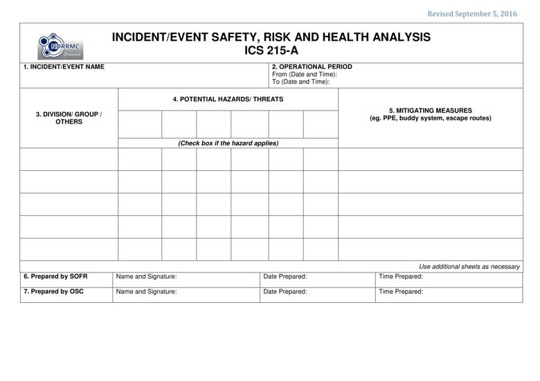

PURPOSE: The ICS 215A aids the Safety Officer (SOFR) in completing an operational risk assessment to prioritize hazards, safety and health issues, and to develop appropriate controls.
PREPARATION: The ICS 215A is typically prepared by the SOFR during the incident action planning cycle. When the Operations Section Chief (OSC) is preparing for the tactics meeting, the SOFR collaborates with the OSC to complete the ICS 215A. This worksheet is closely linked to the ICS 215.
DISTRIBUTION: When ICS 215A is completed, the form is distributed to the Resources Unit to help prepare the Operations Section briefing. All completed original forms must be given to the Documentation Unit.

BLOCK NO. |
BLOCK TITLE |
INSTRUCTIONS |
| 1 | Incident Name | Enter the name assigned to the incident / event. |
| 2 | Operational Period | Enter the start date (mm-dd-yyyy) and time (24 hour format) and end date and time for the operational period to which the form applies. |
| 3 | Division / Group / Others | Enter the Division, Group, or others that were organized based on ICS 215. |
| 4 | Potential Hazards/ Threats | List the hazards or threats likely to be encountered by the personnel at the incident / event area relevant to the work assignment. Should the hazard or threat apply to the Branch, Division or Group, put a check mark under the corresponding block. |
| 5 | Mitigating Measures | List the actions to be taken to reduce the risk for the hazard or threat indicated. |
| 6 | Prepared by SOFR | Enter complete name of the SOFR, signature, date (mm-dd-yyyy), and time (24 hour format) the form was prepared and completed. |
| 7 | Prepared by OSC | Enter complete name of the OSC, signature, date (mm-dd-yyyy), and time (24 hour format) the form was prepared and completed. |